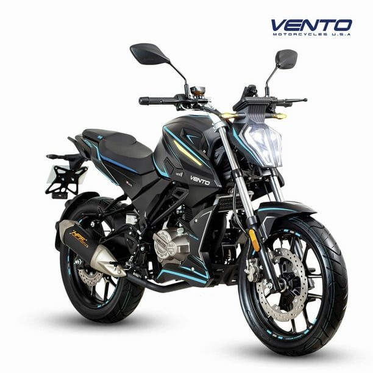

Price-quality ratio
One of the strongest points of the Vento Storm 300 is its excellent price-to-performance ratio. Compared to other bikes in the same displacement range, the Storm 300 offers a sporty design, modern features, and solid performance at a much more accessible cost. It’s a great option for riders who want the look and feel of a mid-range motorcycle without spending too much. The digital dashboard, LED lighting, and inverted suspension give it a premium feel that stands out in its category. Maintenance and spare parts are generally affordable and easy to find in most regions of Mexico, thanks to Vento’s national presence. This makes it not only an attractive purchase, but also a smart long-term investment. In summary, the Storm 300 delivers much more than what you pay for, making it a top choice for budget-conscious riders looking for style, power, and practicality.
 ← Back